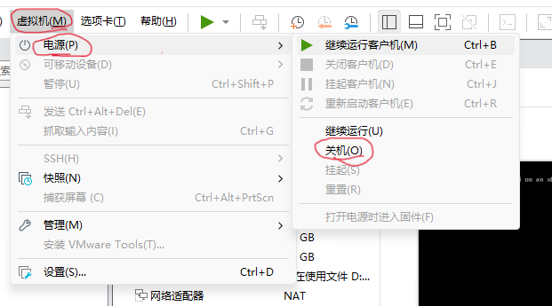
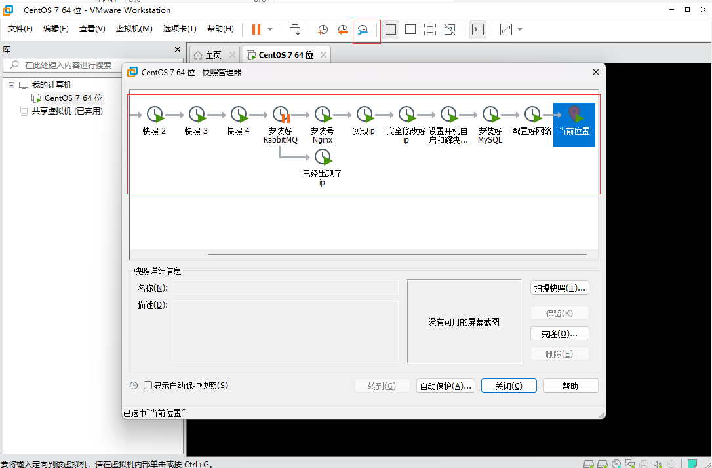
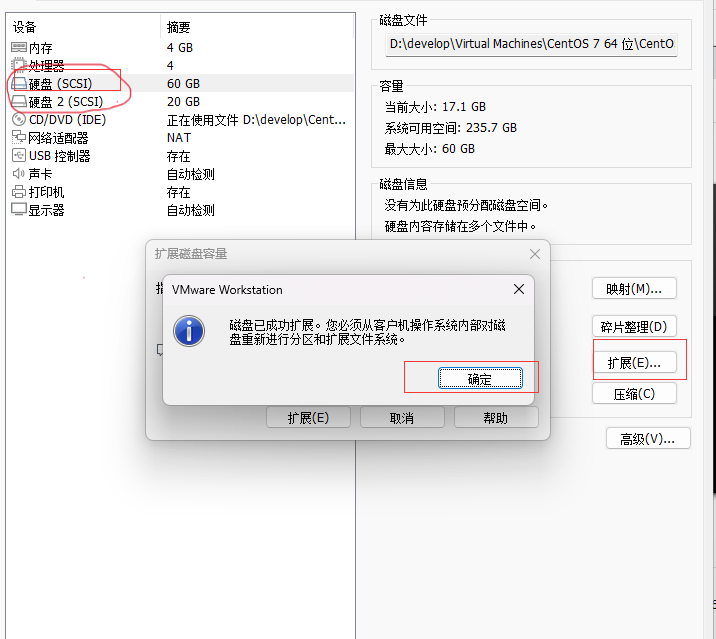
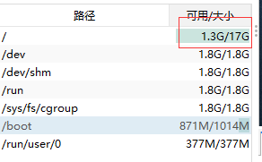

【Linux干货分享】LVM快速扩容虚拟机磁盘_哔哩哔哩_bilibili
在虚拟机上扩容
关闭虚拟机，注意：是关闭不是挂起
把所有快照都删除：
扩容虚拟机
点击扩展后，VMware会提示磁盘已成功扩展。您必须从客户机操作系统内部对磁盘重新进行分区和扩展文件系统。也就是说，这里扩展的磁盘空间，在操作系统里面还不可用，还没生效，需要在操作系统里面进行设置后才能使用。
用finalshell连接，发现确实没有生效：
使用fidsk创建分区
使用fdisk -l查看分区相关信息。
注意看第二行：磁盘 /dev/sdb：64.4 GB, 64424509440 字节，125829120 个扇区
[root@centos01 ~]# fdisk -l
磁盘 /dev/sdb：64.4 GB, 64424509440 字节，125829120 个扇区
Units = 扇区 of 1 * 512 = 512 bytes
扇区大小(逻辑/物理)：512 字节 / 512 字节
I/O 大小(最小/最佳)：512 字节 / 512 字节
磁盘标签类型：dos
磁盘标识符：0x23ff92ef
设备 Boot Start End Blocks Id System
/dev/sdb1 2048 13000000 6498976+ 83 Linux
/dev/sdb2 13000704 41943039 14471168 5 Extended
/dev/sdb5 26000000 41943039 7971520 83 Linux
/dev/sdb6 13002752 25999999 6498624 83 Linux
Partition table entries are not in disk order
磁盘 /dev/sda：64.4 GB, 64424509440 字节，125829120 个扇区
Units = 扇区 of 1 * 512 = 512 bytes
扇区大小(逻辑/物理)：512 字节 / 512 字节
I/O 大小(最小/最佳)：512 字节 / 512 字节
磁盘标签类型：dos
磁盘标识符：0x0009a207
设备 Boot Start End Blocks Id System
/dev/sda1 * 2048 2099199 1048576 83 Linux
/dev/sda2 2099200 41943039 19921920 8e Linux LVM
磁盘 /dev/mapper/centos-root：18.2 GB, 18249416704 字节，35643392 个扇区
Units = 扇区 of 1 * 512 = 512 bytes
扇区大小(逻辑/物理)：512 字节 / 512 字节
I/O 大小(最小/最佳)：512 字节 / 512 字节
磁盘 /dev/mapper/centos-swap：2147 MB, 2147483648 字节，4194304 个扇区
Units = 扇区 of 1 * 512 = 512 bytes
扇区大小(逻辑/物理)：512 字节 / 512 字节
I/O 大小(最小/最佳)：512 字节 / 512 字节
创建分区：fdisk /dev/sda
[root@centos01 ~]# fdisk /dev/sda
欢迎使用 fdisk (util-linux 2.23.2)。
更改将停留在内存中，直到您决定将更改写入磁盘。
使用写入命令前请三思。
命令(输入 m 获取帮助)：n # 输入 n 进入
Partition type:
p primary (2 primary, 0 extended, 2 free)
e extended
Select (default p): p # 输入 p 进行扩容模式
分区号 (3,4，默认 3)：3 # 输入 3 因为前面已经有两个了
起始 扇区 (41943040-125829119，默认为 41943040)： # enter:用默认值
将使用默认值 41943040
Last 扇区, +扇区 or +size{K,M,G} (41943040-125829119，默认为 125829119)： # enter:用默认值
将使用默认值 125829119
分区 3 已设置为 Linux 类型，大小设为 40 GiB
命令(输入 m 获取帮助)：w # 输入 w 保存退出
The partition table has been altered!
Calling ioctl() to re-read partition table.
WARNING: Re-reading the partition table failed with error 16: 设备或资源忙.
The kernel still uses the old table. The new table will be used at
the next reboot or after you run partprobe(8) or kpartx(8)
正在同步磁盘。
再次查看分区情况
[root@centos01 ~]# fdisk -l
磁盘 /dev/sdb：64.4 GB, 64424509440 字节，125829120 个扇区
Units = 扇区 of 1 * 512 = 512 bytes
扇区大小(逻辑/物理)：512 字节 / 512 字节
I/O 大小(最小/最佳)：512 字节 / 512 字节
磁盘标签类型：dos
磁盘标识符：0x23ff92ef
设备 Boot Start End Blocks Id System
/dev/sdb1 2048 13000000 6498976+ 83 Linux
/dev/sdb2 13000704 41943039 14471168 5 Extended
/dev/sdb5 26000000 41943039 7971520 83 Linux
/dev/sdb6 13002752 25999999 6498624 83 Linux
Partition table entries are not in disk order
磁盘 /dev/sda：64.4 GB, 64424509440 字节，125829120 个扇区
Units = 扇区 of 1 * 512 = 512 bytes
扇区大小(逻辑/物理)：512 字节 / 512 字节
I/O 大小(最小/最佳)：512 字节 / 512 字节
磁盘标签类型：dos
磁盘标识符：0x0009a207
设备 Boot Start End Blocks Id System
/dev/sda1 * 2048 2099199 1048576 83 Linux
/dev/sda2 2099200 41943039 19921920 8e Linux LVM
/dev/sda3 41943040 125829119 41943040 83 Linux
磁盘 /dev/mapper/centos-root：18.2 GB, 18249416704 字节，35643392 个扇区
Units = 扇区 of 1 * 512 = 512 bytes
扇区大小(逻辑/物理)：512 字节 / 512 字节
I/O 大小(最小/最佳)：512 字节 / 512 字节
磁盘 /dev/mapper/centos-swap：2147 MB, 2147483648 字节，4194304 个扇区
Units = 扇区 of 1 * 512 = 512 bytes
扇区大小(逻辑/物理)：512 字节 / 512 字节
I/O 大小(最小/最佳)：512 字节 / 512 字节
其中，分区已变为3个了，但这时还没挂载，还不能用
磁盘标识符：0x0009a207
设备 Boot Start End Blocks Id System
/dev/sda1 * 2048 2099199 1048576 83 Linux
/dev/sda2 2099200 41943039 19921920 8e Linux LVM
/dev/sda3 41943040 125829119 41943040 83 Linux
使用新分区创建物理卷(pv)
重启Linux
reboot
查看物理卷：pvdisplay
[root@centos01 ~]# pvdisplay
--- Physical volume ---
PV Name /dev/sda2
VG Name centos
PV Size <19.00 GiB / not usable 3.00 MiB
Allocatable yes (but full)
PE Size 4.00 MiB
Total PE 4863
Free PE 0
Allocated PE 4863
PV UUID OunT72-Nq6Z-K2x8-zkmk-2OhI-xQFf-EA2fC9
使用pvcreate 创建物理卷
[root@centos01 ~]# pvcreate /dev/sda5
Device /dev/sda5 not found.
[root@centos01 ~]# pvcreate /dev/sda3
Physical volume "/dev/sda3" successfully created.
不需要担心创建错了，如果没有回报错Device /dev/sda5 not found.
为什么是/dev/sda3，我想是和我们的分区相关的吧
磁盘标识符：0x0009a207
设备 Boot Start End Blocks Id System
/dev/sda1 * 2048 2099199 1048576 83 Linux
/dev/sda2 2099200 41943039 19921920 8e Linux LVM
/dev/sda3 41943040 125829119 41943040 83 Linux
创建完物理卷之后再次查看，第二个就是40G的
[root@centos01 ~]# pvdisplay
--- Physical volume ---
PV Name /dev/sda2
VG Name centos
PV Size <19.00 GiB / not usable 3.00 MiB
Allocatable yes (but full)
PE Size 4.00 MiB
Total PE 4863
Free PE 0
Allocated PE 4863
PV UUID OunT72-Nq6Z-K2x8-zkmk-2OhI-xQFf-EA2fC9
"/dev/sda3" is a new physical volume of "40.00 GiB"
--- NEW Physical volume ---
PV Name /dev/sda3
VG Name
PV Size 40.00 GiB
Allocatable NO
PE Size 0
Total PE 0
Free PE 0
Allocated PE 0
PV UUID DIde5n-ZXYV-5m2j-Rl1s-HJqY-JWQ7-RAqtFM
将新的物理卷（PV）添加到原有卷组（vg）中
查看原有卷组的名称：vgs
[root@centos01 ~]# vgs
VG #PV #LV #SN Attr VSize VFree
centos 1 2 0 wz--n- <19.00g 0
将新的物理卷（PV）添加到原有卷组（vg）中：vgextend 原有卷组名称 新的物理卷
[root@centos01 ~]# vgextend centos /dev/sda3
Volume group "centos" successfully extended
查看卷组信息
[root@centos01 ~]# vgdisplay
--- Volume group ---
VG Name centos
System ID
Format lvm2
Metadata Areas 2
Metadata Sequence No 4
VG Access read/write
VG Status resizable
MAX LV 0
Cur LV 2
Open LV 2
Max PV 0
Cur PV 2
Act PV 2
VG Size 58.99 GiB # 大小已经是60G了
PE Size 4.00 MiB
Total PE 15102
Alloc PE / Size 4863 / <19.00 GiB
Free PE / Size 10239 / <40.00 GiB
VG UUID SXMaMd-P0ax-prl6-JXf3-YtVz-254A-ICyQFo
扩容逻辑卷（lv）
查看逻辑卷（lv）现在容量：
[root@centos01 ~]# lvdisplay
--- Logical volume ---
LV Path /dev/centos/swap
LV Name swap
VG Name centos
LV UUID AswqAO-OX23-eUas-QrXN-L0vn-moFW-NHdhLw
LV Write Access read/write
LV Creation host, time localhost, 2021-09-15 08:59:43 +0800
LV Status available
# open 2
LV Size 2.00 GiB
Current LE 512
Segments 1
Allocation inherit
Read ahead sectors auto
- currently set to 8192
Block device 253:1
--- Logical volume ---
LV Path /dev/centos/root
LV Name root
VG Name centos
LV UUID efcH4t-WpAO-ZSrK-tjVt-oC8o-a3xr-iBGtEU
LV Write Access read/write
LV Creation host, time localhost, 2021-09-15 08:59:43 +0800
LV Status available
# open 1
LV Size <17.00 GiB
Current LE 4351
Segments 1
Allocation inherit
Read ahead sectors auto
- currently set to 8192
Block device 253:0
扩容逻辑卷（lv）：lvextend
[root@centos01 ~]# lvextend -l +10239 /dev/centos/root
Size of logical volume centos/root changed from <17.00 GiB (4351 extents) to 56.99 GiB (14590 extents).
Logical volume centos/root successfully resized.
第一个参数10239来自于物理卷组信息的 Free PE / Size 10239 / <40.00 GiB
[root@centos01 ~]# vgdisplay
--- Volume group ---
VG Name centos
System ID
Format lvm2
Metadata Areas 2
Metadata Sequence No 4
VG Access read/write
VG Status resizable
MAX LV 0
Cur LV 2
Open LV 2
Max PV 0
Cur PV 2
Act PV 2
VG Size 58.99 GiB # 大小已经是60G了
PE Size 4.00 MiB
Total PE 15102
Alloc PE / Size 4863 / <19.00 GiB
Free PE / Size 10239 / <40.00 GiB
VG UUID SXMaMd-P0ax-prl6-JXf3-YtVz-254A-ICyQFo
第二个参数/dev/centos/root来自于逻辑卷组的信息LV Path /dev/centos/root
[root@centos01 ~]# lvdisplay
--- Logical volume ---
LV Path /dev/centos/root
LV Name root
VG Name centos
LV UUID efcH4t-WpAO-ZSrK-tjVt-oC8o-a3xr-iBGtEU
LV Write Access read/write
LV Creation host, time localhost, 2021-09-15 08:59:43 +0800
LV Status available
# open 1
LV Size <17.00 GiB
Current LE 4351
Segments 1
Allocation inherit
Read ahead sectors auto
- currently set to 8192
Block device 253:0
调整文件系统大小
查看文件系统类型df -T。可以看到现在根路径下的文件系统(/dev/mapper/centos-root)的类型是xfs
[root@centos01 ~]# df -T
文件系统 类型 1K-块 已用 可用 已用% 挂载点
/dev/mapper/centos-root xfs 17811456 16494968 1316488 93% /
devtmpfs devtmpfs 1921600 0 1921600 0% /dev
tmpfs tmpfs 1932652 0 1932652 0% /dev/shm
tmpfs tmpfs 1932652 8856 1923796 1% /run
tmpfs tmpfs 1932652 0 1932652 0% /sys/fs/cgroup
/dev/sda1 xfs 1038336 145808 892528 15% /boot
tmpfs tmpfs 386532 0 386532 0% /run/user/0
查看容量发现目前根目录文件系统(/dev/mapper/centos-root)只有20G
[root@centos01 ~]# df -h
文件系统 容量 已用 可用 已用% 挂载点
/dev/mapper/centos-root 17G 16G 1.3G 93% /
devtmpfs 1.9G 0 1.9G 0% /dev
tmpfs 1.9G 0 1.9G 0% /dev/shm
tmpfs 1.9G 8.7M 1.9G 1% /run
tmpfs 1.9G 0 1.9G 0% /sys/fs/cgroup
/dev/sda1 1014M 143M 872M 15% /boot
tmpfs 378M 0 378M 0% /run/user/0
扩容xfs_growfs 文件系统
[root@centos01 ~]# xfs_growfs /dev/mapper/centos-root
meta-data=/dev/mapper/centos-root isize=512 agcount=4, agsize=1113856 blks
= sectsz=512 attr=2, projid32bit=1
= crc=1 finobt=0 spinodes=0
data = bsize=4096 blocks=4455424, imaxpct=25
= sunit=0 swidth=0 blks
naming =version 2 bsize=4096 ascii-ci=0 ftype=1
log =internal bsize=4096 blocks=2560, version=2
= sectsz=512 sunit=0 blks, lazy-count=1
realtime =none extsz=4096 blocks=0, rtextents=0
data blocks changed from 4455424 to 14940160
再次查看，已经扩容了
[root@centos01 ~]# df -h
文件系统 容量 已用 可用 已用% 挂载点
/dev/mapper/centos-root 57G 16G 42G 28% /
devtmpfs 1.9G 0 1.9G 0% /dev
tmpfs 1.9G 0 1.9G 0% /dev/shm
tmpfs 1.9G 8.7M 1.9G 1% /run
tmpfs 1.9G 0 1.9G 0% /sys/fs/cgroup
/dev/sda1 1014M 143M 872M 15% /boot
tmpfs 378M 0 378M 0% /run/user/0
如果文件系统的类型是ext4，那么扩容的命令就是resize2fs /dev/mapper/centos-root
转载请注明来源，欢迎对文章中的引用来源进行考证，欢迎指出任何有错误或不够清晰的表达。可以在下面评论区评论，也可以邮件至 1909773034@qq.com